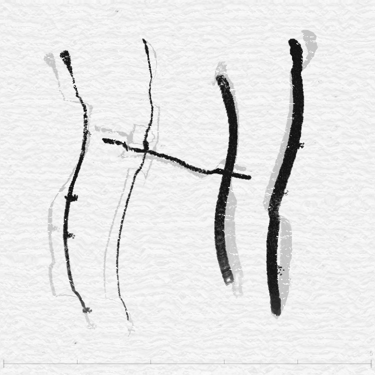
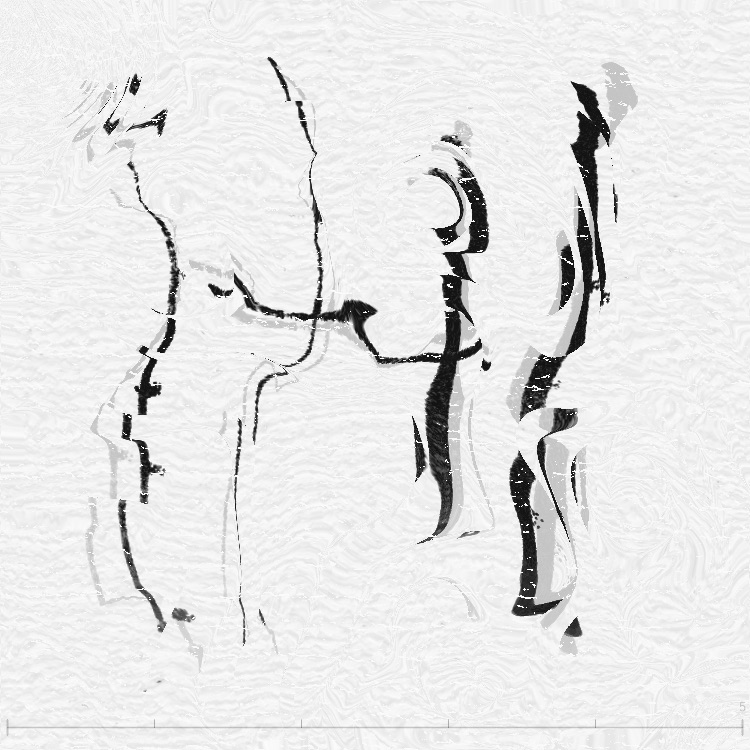
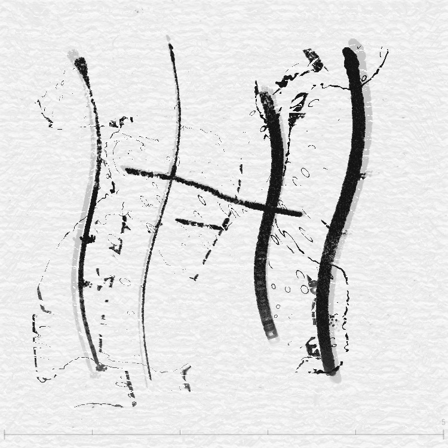
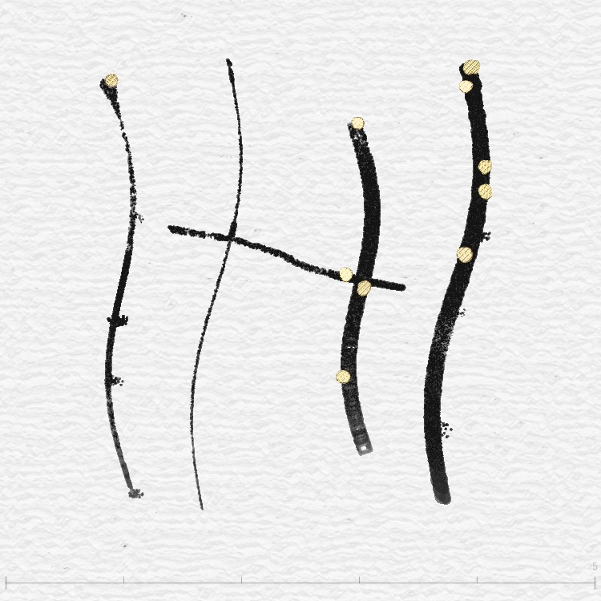
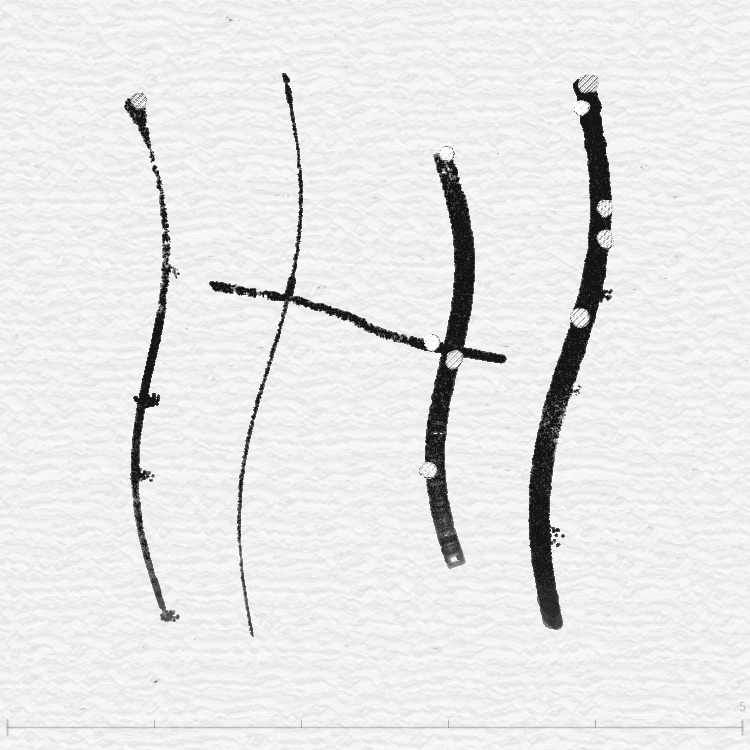
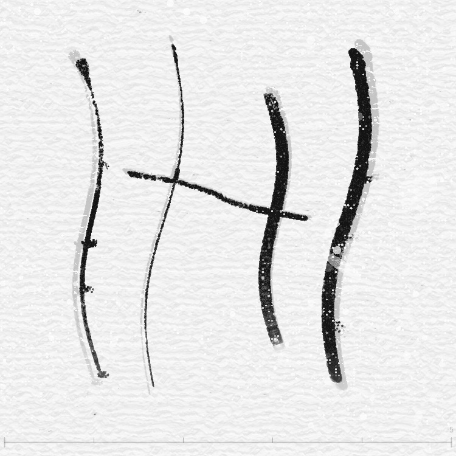
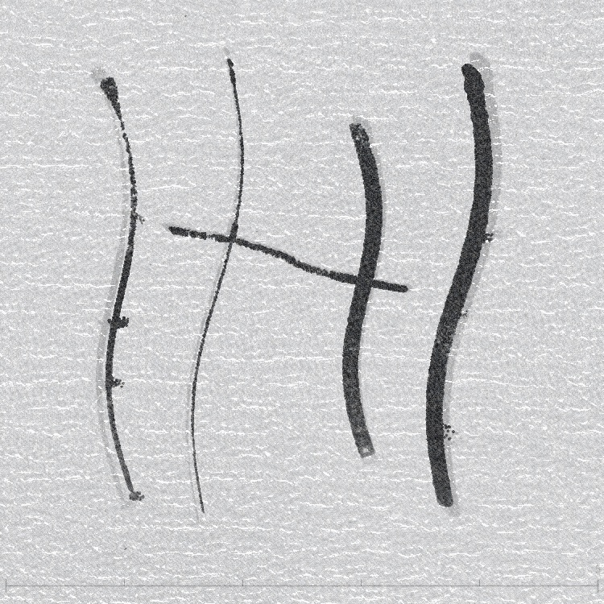

畫完之後的「調味料」
所有特效都作用在「已經畫好的圖」上，不會改變你的筆觸——它們只是改變這些筆觸被「看到」的方式。主要的特效來自兩個 Shader：
flow.frag
Simplex 噪波位移、多種造型模式、邊緣飛白
distort.frag
FBM 扭曲、漣漪散射、細胞紋路、白點、底片顆粒
metallic.frag
金屬反射、Fresnel、鑽石色散、黑金紋理
📖 更多閱讀：inkField 的變形效果源自前作春分｜Equinox——為了融合兩種季節而拉扯 buffer 形成另一種狀態，是春分的核心技術原理
Flow 力場：看不見的風在吹你的畫
flow.frag 的核心運作原理是「從別的位置取樣」：
為什麼用 min()？
min(原位置顏色, 偏移位置顏色) 的效果是：如果偏移後的位置更暗（有墨），就把那個墨「拉」過來。這樣墨跡會往四周「蔓延」，但亮的地方不會覆蓋暗的地方——跟真實墨水在紙上暈開的效果很像。
Simplex Noise 是什麼？
它是一種數學函數，輸入一個座標，輸出一個「看起來很自然的隨機值」。跟純隨機（每個點都跳來跳去）不同，Simplex Noise 相鄰的點值很接近，遠一點的才差很多——就像真實的山脈地形：旁邊的海拔差不多，但翻過一座山就完全不同了。
在 flow.frag 裡，simpleN2() 輸出一個二維向量（x 偏移, y 偏移），就是每個點被「風」吹的方向。
Flow 的八種造型模式
除了基礎噪波位移，flow.frag 還有八種 blendType 造型模式：
| blendType | 名稱 | 效果 |
|---|---|---|
| 0 | 基礎模式 | 只有噪波位移，根據 gobalStyle 調整強度分區 |
| 2 | 同心圓 | 兩個隨機圓心產生徑向漣漪，用 mix() 取代基礎噪聲——圓心附近漣漪主導，外圍保留有機噪聲 |
| 3 | 縱向 | 多層 sin/cos/tan 組合，產生垂直方向的扭曲紋路 |
| 4 | 橫向 | 同上但方向翻轉，產生水平方向的扭曲紋路 |
| 5 | 龜裂花紋 | 雙層 Voronoi/cellular 噪聲驅動，cell 邊界處產生強位移形成龜裂/碎裂紋理，cell 內部保留噪聲 |
| 6 | 馬賽克碎片 | 畫面切成隨機大小的格子，每格獨立隨機偏移——像打碎的磁磚各自位移，格線邊界清晰 |
| 7 | 漩渦 | 兩個渦心從原始座標計算極座標旋轉，Gaussian 衰減——靠近渦心漩渦主導，遠離渦心過渡到噪聲 |
| 8 | 細胞 | Voronoi 細胞紋路 + Simplex 擾動 |
邊緣飛白效果
所有 Flow 模式在筆觸邊緣都有一個精巧的處理——邊緣半色調過渡（halftone dithering）：
這就像真實墨水在紙面邊緣自然散開的飛白效果——不是整齊的漸變，而是像墨點飛濺一樣的隨機點狀。
白色筆刷保護（TypeMapBuffer）
白色筆刷的身份現在由獨立的 typeMapBuffer 管理（舊的 G=R×0.5 暗號系統已移除）。Flow 對 typeMap 做獨立的同步 pass（isTypeMapMode=1），用 nearest-neighbor 取樣避免插值模糊身份：
詳見除錯偵探故事集中 TypeMapBuffer 的完整架構說明。
FBM 扭曲：隔著水面看你的畫

distort.frag 裡的 FBM 是這樣建構的：
func() 函數：FBM 的 FBM
distort.frag 裡最核心的 func() 函數更進一步——它用 FBM 的結果去偏移另一個 FBM，再用那個結果偏移第三個 FBM。就像用山的形狀去扭曲另一座山，再用結果扭曲第三座山。最終產生的形狀極其自然、充滿有機感。
Distort 怎麼用 FBM 的？
開啟 distort 後，程式用 FBM 值作為「遮罩」（fbmMask），控制力場位移的強度：
- fbmMask 高的區域 → 位移強 → 扭曲明顯
- fbmMask 低的區域 → 位移弱 → 幾乎不變
另外還會根據力場方向做色相偏移——暗色區域的顏色會隨力場方向微微變化，增加有機感。
Resonance Scatter：往池塘丟 16 顆石頭

16 個波源
程式在畫面上均勻放置 16 個點（4×4 格子），每個點的位置會根據 forceMap（力場）略微偏移。然後計算每個像素到這 16 個點的距離，用正弦波模擬漣漪：
漣漪怎麼變成位移？
最終的位移是兩部分的混合：
- 振盪位移：波的值直接當位移（像素跟著波上下左右晃）
- 梯度位移：波的坡度方向當位移（像素順著波的斜面滑動）
rsGradientMix 控制兩者的比例——振盪為主像「水面波紋」，梯度為主像「光線折射」。
Cellular / Voronoi：顯微鏡下的細胞

cellular2x2() 函數
distort.frag 裡的 cellular2x2() 計算兩個最近距離 F.x 和 F.y（最近和次近的「種子」距離）：
然後用這個 mask 控制位移強度——邊界處位移大、內部位移小，產生「細胞壁更暗」的效果。
時間動畫
Cellular 效果會緩慢漂移（速度 ×0.7），讓細胞紋路看起來像在「流動」。邊緣會用 smoothstep 做 10% 的過渡，避免畫面邊緣突然截斷。
金屬光澤：讓墨跡變成液態金屬


金屬光澤只作用在「有墨跡的地方」——用 bugsMask（筆觸遮罩）控制哪裡有效果、哪裡沒有。
反射與法線貼圖
程式從遮罩的濃淡變化計算「表面法線」——墨跡邊緣濃度變化大的地方，表面就像「斜坡」，光線會往旁邊反射：
法線就像表面每個點的「朝向」——平面朝上，斜坡朝旁邊。有了法線，就能算出光線打在表面上會往哪裡反射。
Fresnel 效果：邊緣更亮
Metallic shader 用 Schlick 近似公式計算 Fresnel：
六種金屬色調
| 色調 | RGB | 特殊處理 |
|---|---|---|
| Gold | (0.88, 0.72, 0.52) | 暖色反射 |
| Silver | (0.75, 0.75, 0.75) | 灰階檢測 → 中性反射 |
| Copper | (0.72, 0.50, 0.35) | 紅銅色調 |
| Rose | (0.88, 0.65, 0.70) | 玫瑰金 |
| Black Gold | (0.15, 0.12, 0.08) | 特殊黑金紋理函數 + 鏽蝕細節 |
| Diamond | (0.95, 0.95, 1.0) | 色散折射！RGB 三色不同折射率 |
鑽石色散
鑽石模式是最華麗的——它模擬了真實鑽石的「色散」（dispersion）效果。鑽石對不同顏色的光有不同的折射率：
因為紅光彎得最少、藍光彎得最多，三色在邊緣處分開了——就像真正鑽石的「火彩」。
White Dot & Film Grain：紙上的小瑕疵


三種尺寸的白點
| 層次 | 大小 | 描述 |
|---|---|---|
| Layer 1 | ~5px | 小針孔（punctures）——像紙面上被針戳的小洞 |
| Layer 2 | 10~30px | 中型斑點（spots）——隨機半徑的圓形白斑 |
| Layer 3 | 40~100px | 大型刮痕（gouges）——橢圓形、有方向性的痕跡 |
每一層都用 hash 噪波控制，而且有「叢集」效果——白點傾向聚在一起出現，不會均勻散佈。密度由 whiteDotDensity 統一控制。
Film Grain：底片顆粒
模擬真實底片的顆粒感，有三個特色：
- 暗處更多顆粒：亮度越低的區域，顆粒越明顯（像真實底片）
- 筆觸處更多顆粒：力場強的地方（有筆觸活動）顆粒更密
- 多頻率混合：細顆粒 60% + 中團粒 30% + 粗斑塊 10%
效果組合的藝術
這些效果可以同時開啟、疊加使用。以下是整個特效管線的處理順序：
建議組合
| 風格 | 建議組合 |
|---|---|
| 古典水墨 | Flow (基礎模式) + 無 Distort + 少量 White Dot + Film Grain |
| 抽象藝術 | Flow (漩渦) + FBM Distort + Resonance Scatter |
| 生物紋理 | Flow (細胞) + Cellular + Film Grain |
| 金屬雕塑 | Flow (基礎) + Metallic (Gold/Diamond) |
| 復古底片 | Flow (基礎) + 強 Film Grain + 大量 White Dot |
小結
所有特效的共同原則是：不改變原始筆觸，只改變它被「看到」的方式。它們像一層層的濾鏡，可以疊加、可以單用、可以調整強度。這就是為什麼同樣的一筆，搭配不同的特效，可以看起來像水墨、像水彩、像金屬雕塑、像顯微鏡下的生物組織。
Polygon Mask：限制繪畫區域
有時候你只想在畫面的某個區域作畫，讓其他地方完全不受影響。Polygon Mask Tool 就是為此而生。
原理：Shader 層級的遮罩
Mask 的運作方式和 Photoshop 的遮罩類似，但直接在 GPU shader 層級實現：
- polygonMaskBuffer：獨立的 WebGL framebuffer，白色＝可畫，黑色＝不可畫
- 四個 shader 都加入
useMask+maskTexuniform： encode.frag（筆觸編碼）、feedback.frag（墨水擴散）、realtime.frag（即時預覽）、typeMapEncode.frag（筆刷身份） - 每個 shader 的
main()開頭都加上 early-return：if (mask < 0.5) { 回傳原始值; return; } - flow.frag 和 composite.frag 不受 mask 控制 — flow 是全畫面變形，composite 是最終合成
兩種遮罩模式
Rect 矩形
拖拉畫矩形區域。按下開始、放開完成。綠色虛線預覽。
Polygon 多邊形
Toggle 按鈕開始加點（左鍵），再按一次封閉多邊形。至少 3 個頂點。
座標系統對齊
筆刷系統有 perspectiveOffset = -10。Mask 座標記錄時也套用 mouseX - 10, mouseY - 10，確保遮罩邊界和筆觸精確對齊。
WebGL framebuffer 的 Y 軸與螢幕相反（Y=0 在底部），所以 drawMaskRect 和 drawMaskPolygon 用 height - y 翻轉。
錄製與播放
Mask 狀態嵌入筆畫事件（strokeData.maskData），不使用獨立的 mask 事件。這避免了時間戳錯亂問題 — 獨立事件的時間在暫停期間會失準，但嵌入筆畫事件中就跟著筆畫走。
視覺化
遮罩用綠色虛線畫在 cursorBuffer（透過 grid.js 的 drawMaskToGrid()），包括：已完成的遮罩邊框、拖拉中的矩形預覽、建構中的多邊形頂點預覽。統一用一個系統渲染，不需要額外的 HTML overlay canvas。
白色筆刷的陷阱
typeMapEncode.frag 也需要 mask 檢查！
如果只在 encode.frag（顏色）加 mask，但漏了 typeMapEncode.frag（身份），白色筆刷的 brushType = 1.0 會寫到 mask 外的 typeMap。composite.frag 看到 typeMap 標記為白色筆刷，就會用 Screen blend 處理那些像素 — 即使顏色沒變，混合模式的改變會造成淡白色滲出。